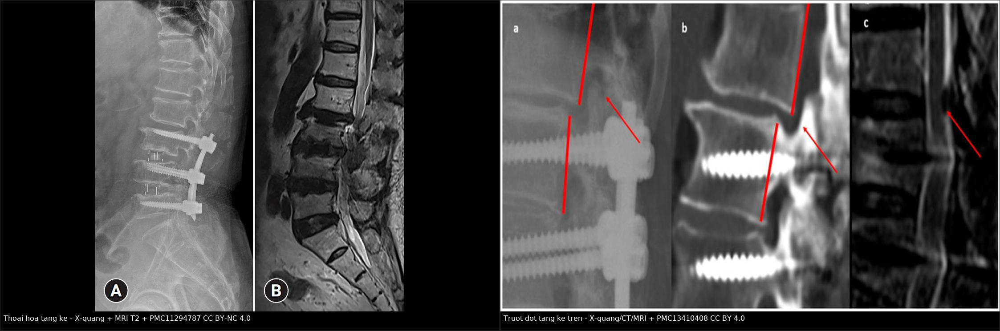
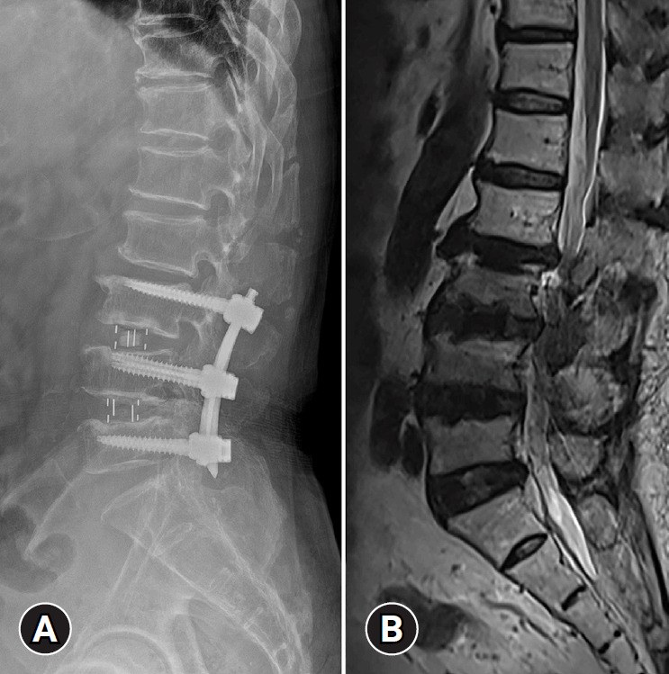
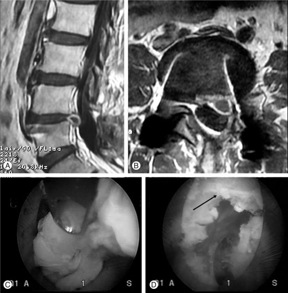
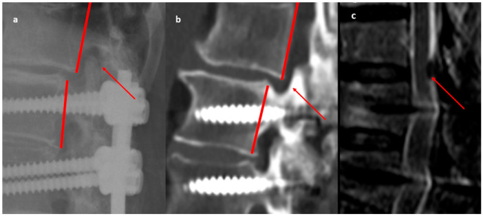

3015 — Hội chứng đau sau mổ cột sống (FBSS): sẹo xơ – đĩa tái phát – tầng kế cận – dụng cụ hỏng
Tags: pattern:dau-sau-mo pattern:seo-xo-ngoai-mang-cung pattern:dia-tai-phat pattern:thoai-hoa-tang-ke pattern:long-vit pattern:gia-khop pattern:viem-dia-dem vung:cot-song-that-lung score:VAS score:ODI protocol:MRI-cot-song-tuong-phan protocol:CT-xoay-dung-cu
Mức chắc chắn (certainty): tổng hợp y văn (literature synthesis) — khung số liệu lấy từ cohort toàn quốc 1.029.500 ca mổ thắt lưng (PMC13454489), cohort 1233 ca giải ép không dụng cụ (PMC13263612), 150 ca mổ lại (PMC13489680), 95 ca hồi cứu đa trung tâm (PMC12956404), tổng quan tự sự 2024 (PMC11294787) và ca nguyên văn có ảnh (PMC3047892). Nhãn này vì bài ghép nhiều nguồn.
Bài này là phần “đau mạn sau mổ” của 3013 – Đuôi ngựa sau mổ cột sống và nối tiếp 228 – Thoát vị đĩa đệm thắt lưng. Khác biệt cốt lõi: 3013 là cấp cứu trong giờ–ngày; 3015 là đau kéo dài hàng tháng–năm, nơi câu hỏi không phải “có chèn ép không” mà là “có tổn thương còn mổ được không, hay đau đã thành bệnh cảnh mạn”.
1. Tổng quan bệnh học – cơ chế hình ảnh
- Định nghĩa và tên gọi: FBSS là đau lưng/đau rễ tồn tại, tái phát hoặc mới xuất hiện sau ≥ 1 lần mổ cột sống, không do bệnh lý mới độc lập. Thuật ngữ mới PSPS-2 (persistent spinal pain syndrome type 2) được ưu tiên vì trung tính hơn, nhưng “FBSS” vẫn là từ khóa y văn.
- TẠI SAO đau kéo dài — bốn cơ chế chồng lấp:
- Cơ học: mất/hỏng cấu trúc đĩa–khớp, mất vững, giả khớp (pseudoarthrosis), dụng cụ hỏng → đau khi tải.
- Thần kinh: chèn ép rễ còn lại (giải ép chưa đủ, mảnh đĩa sót, hẹp tầng kế cận) hoặc đau rễ không chèn ép do tổn thương rễ mạn.
- Sẹo xơ: mô hạt xơ dính màng cứng và rễ, co kéo + giải phóng chất trung gian viêm → đau và hạn chế vận động; 83,3% bệnh nhân FBSS có sẹo xơ ngoài màng cứng nặng trên nội soi ngoài màng cứng (epiduroscopy).
- Trung ương/hóa học: mẫn cảm trung ương sau đau kéo dài — giải thích vì sao mổ sửa không phải lúc nào cũng hết đau.
- TẠI SAO MRI có tương phản phân biệt được sẹo và đĩa tái phát: mô sẹo xơ giàu mạch máu + mô hạt, không có hàng rào máu–mô đĩa nên ngấm thuốc sớm và đều (thường trong 20–30 phút); mảnh đĩa thoát vị không có mạch máu, chỉ ngấm rìa ở mô hạt quanh chu vi, không ngấm trung tâm. Vì vậy cần T1 sau tiêm muộn, không đánh giá trên ảnh tiêm thì sớm.
- TẠI SAO tín hiệu đĩa thay đổi sau mổ: đĩa thoái hóa mất nước → T2 tối (mất tín hiệu “đĩa sáng”); sau lấy đĩa, khoang đĩa hẹp và có thể có dịch/tổ chức hạt; mảnh đĩa tái phát thường T2 đồng/tăng nhẹ so với đĩa thoái hóa và liên tục với khoảng đĩa.
- TẠI SAO CT là chuẩn cho dụng cụ: kim loại gây giả ảnh (metal artifact) trên MRI; CT cửa sổ xương lát mỏng, dựng ảnh đa mặt phẳng (MPR) thấy vùng sáng quanh vít (halo), gãy vít/thanh, di lệch cage, giả khớp và liền xương.
- Số liệu định lượng phải nhớ:
- Tần suất: 10–40% sau mổ cột sống (y văn); 26,7% (274.955/1.029.500 ca, Hàn Quốc, định nghĩa gộp mã bệnh + mổ lại); 13,9% (172/1233) sau giải ép không dụng cụ.
- Nguyên nhân ở nhóm mổ lại (n = 150): sẹo xơ ngoài màng cứng 28%, đĩa tái phát 26%, mảnh đĩa sót 24%, giả khớp/hỏng dụng cụ 16%, mổ sai tầng 6%.
- Sau giải ép không dụng cụ (n = 1233): đĩa tái phát 36,0%, giải ép chưa đủ 23,8%, viêm đĩa đệm 22,7%.
- Biến chứng mổ lại: 46% (69/150) có biến chứng chu phẫu; rách màng cứng 16% là thường gặp nhất.
- Kết cục mổ lại: 62% hết đau sau 3 tháng, 70% sau 12 tháng và duy trì đến 24 tháng; VAS 7,22 ± 0,89 → 0,98 ± 0,75; ODI 66,30 ± 9,06 → 7,77 ± 3,55 (p = 0,001) — tức mổ lại có ích nhưng 30% vẫn còn đau.
- Thời gian: trung bình 2,3 năm từ mổ đầu đến mổ lại (95 ca).
- Thoái hóa tầng kế cận (ASD): tỷ lệ mổ lại gộp 8% (95% CI 6,5–9,8%; 55 nghiên cứu, 1940 bệnh nhân); cấu trúc cố định càng dài, nguy cơ càng cao (P = 0,0001). Tổng quan khác nêu 22–36% ASD và > 20% phải mổ lại — chênh lệch do định nghĩa và thời gian theo dõi, không mâu thuẫn.
- Yếu tố nguy cơ trước mổ: tuổi, bệnh đa dây thần kinh ngoại biên, béo phì, đái tháo đường, tăng huyết áp, hút thuốc; vận động vừa 500–1499 MET-phút/tuần có tính bảo vệ.
2. Mẫu hình + chẩn đoán phân biệt theo vị trí (gamut)
- Mẫu hình cốt lõi: đau lưng và/hoặc chân sau mổ, không tương xứng với mức chèn ép trên hình ảnh, hoặc tái phát sau một khoảng ổn định. Câu hỏi đầu tiên: đau rễ (radicular) hay đau trục (axial)?
- Gamut theo thời điểm sau mổ:
- < 3 tháng: mảnh đĩa sót, giải ép chưa đủ, máu tụ, nhiễm trùng sớm, đau rễ do thao tác; MRI sớm có ngấm thuốc hậu phẫu bình thường — dễ đọc quá mức.
- 3–12 tháng: đĩa tái phát, sẹo xơ, viêm đĩa đệm muộn, giả khớp (nếu có cố định).
- > 1–2 năm: thoái hóa tầng kế cận, hỏng dụng cụ, gãy xương quanh dụng cụ, hẹp tái phát, đau mạn trung ương.
- Gamut theo vị trí tổn thương trên trục:
- Tại tầng mổ: sẹo xơ, đĩa tái phát/mảnh sót, hẹp lỗ liên hợp còn lại, giả khớp.
- Tầng kế cận (trên/dưới): thoái hóa tầng kế cận, trượt đốt, gãy đốt trên dụng cụ (junctional fracture), hẹp ống sống.
- Ngoài cột sống: khớp háng, khớp cùng chậu, cơ hình lê, bệnh mạch máu — nguồn đau hay bị bỏ sót khi đã có “chẩn đoán sẵn” FBSS.
- Gamut theo hình thái trên MRI:
- Khối choán chỗ + ngấm rìa + liên tục khoảng đĩa: đĩa tái phát.
- Mô ngấm đều, bám màng cứng, không hiệu ứng choán chỗ: sẹo xơ.
- Dịch + vỏ ngấm + hạn chế khuếch tán: nhiễm trùng (viêm đĩa đệm/áp-xe).
- Phù tủy xương quanh vít + vùng sáng quanh vít: long vít/nhiễm trùng — cần CT + CRP.
- Hẹp ống sống/lỗ liên hợp tại tầng kế cận + mất chiều cao đĩa: thoái hóa tầng kế cận.
3. Bảng so sánh phân biệt (ma trận đối chiếu)
| Thực thể (entity) | Hình ảnh/lâm sàng điển hình | Chốt vào (rule-in) | Chốt loại (rule-out) | Gợi ý xác nhận |
|---|---|---|---|---|
| Sẹo xơ ngoài màng cứng | Mô ngấm thuốc đều, sớm, bám màng cứng, không hiệu ứng choán chỗ rõ; đau âm ỉ, không theo rễ | Ngấm đều + không liên tục khoảng đĩa + không đẩy bao tủy | Khối có hiệu ứng choán chỗ + ngấm rìa → đĩa tái phát | MRI T1 sau tiêm muộn (20–30 phút); so MRI nền sau mổ |
| Đĩa tái phát | Khối trước/trước bên, liên tục với khoảng đĩa, T2 đồng/tăng, ngấm rìa | Liên tục khoảng đĩa + ngấm rìa + chèn ép rễ tương ứng lâm sàng | Ngấm đều muộn, tách khỏi khoảng đĩa → sẹo | MRI có tương phản; đối chiếu ảnh mổ |
| Mảnh đĩa sót | Khối rời, thường trong ống sống/lỗ liên hợp, ngay sau mổ; đau rễ sớm, không cải thiện | Khối rời khỏi khoảng đĩa + đau rễ ngay sau mổ | Không có khối + đau trục → không phải mảnh sót | MRI sớm; mổ thăm dò nếu lâm sàng rõ |
| Thoái hóa tầng kế cận | Hẹp đĩa, xơ hóa, trượt đốt, hẹp ống sống ở tầng trên/dưới dụng cụ; đau xuất hiện sau ≥ 1–2 năm | Tổn thương mới tại tầng kế cận + thời gian phù hợp | Tổn thương tại tầng mổ → không phải ASD | X-quang động + MRI; CT nếu cần xương |
| Giả khớp (pseudoarthrosis) | Khe sáng giữa các đốt/cage không liền xương, di lệch động, đau khi tải | Không liền xương trên CT ≥ 6–12 tháng + di lệch động | Cầu xương liên tục → loại trừ | CT MPR + X-quang động |
| Long vít/hỏng dụng cụ | Vùng sáng quanh vít, gãy vít/thanh, cage di lệch; đau tăng dần | Halo quanh vít + gãy/di lệch trên CT | Vít nguyên vẹn, không halo → loại trừ | CT cửa sổ xương + giảm giả ảnh; so phim cũ |
| Nhiễm trùng (viêm đĩa đệm/áp-xe) | Dịch + vỏ ngấm + hạn chế khuếch tán, phù mô mềm; sốt, CRP tăng | DWI sáng/ADC tối + hội chứng nhiễm trùng | Không vỏ, không hạn chế khuếch tán → loại trừ | MRI + CRP/PCT + cấy (xem 3012/3013) |
| Mổ sai tầng | Tổn thương chưa được giải ép vẫn còn, tầng mổ không có bệnh lý | Đối chiếu phim trước mổ + báo cáo mổ + hình ảnh hiện tại | Tầng mổ đúng bệnh lý và đã giải ép → loại trừ | So phim cũ; CT xác định tầng dụng cụ |

Trái: cột sống thắt lưng đã cố định L3–L5, đĩa L3–L4 trên thoát vị (A: X-quang; B: MRI T2). Phải: trượt đốt tầng kế cận trên (a: X-quang; b: CT; c: MRI) — cùng cơ chế tăng tải tại điểm dừng của cấu trúc cố định. Ảnh nguyên bản, ghép letterbox. Nguồn: PMC11294787 (CC BY-NC 4.0) và PMC13410408 (CC BY 4.0).4. Protocol chụp + hệ phân độ/điểm chuẩn hóa
- Ai chụp — đừng chụp mù: chụp khi đau ảnh hưởng chức năng, có dấu thần kinh mới, đau rễ rõ, nghi nhiễm trùng/dụng cụ hỏng, hoặc trước khi cân nhắc mổ lại. Đau trục đơn thuần, không dấu thần kinh, hình ảnh cũ ổn định → không chụp lặp lại.
- Thứ tự modality theo câu hỏi:
- X-quang thắt lưng + phim động (cúi–ưỡn): bước đầu rẻ, thấy di lệch động, mất vững, gãy dụng cụ, trượt đốt.
- CT lát mỏng cửa sổ xương + MPR (giảm giả ảnh kim loại): chuẩn cho long vít, gãy vít/thanh, giả khớp, liền xương, hẹp xương, gãy đốt kế cận.
- MRI thắt lưng có tương phản (T1, T2, STIR, T1 + gadolinium muộn): chuẩn cho sẹo vs đĩa tái phát, hẹp ống sống/lỗ liên hợp, phù tủy, nhiễm trùng (thêm DWI/ADC). Bắt buộc có tương phản khi câu hỏi là sẹo vs đĩa.
- MRI toàn trục hoặc CT myelography: khi có dị tật, cong vẹo, nhiều tầng hoặc MRI chống chỉ định.
- Điện cơ (EMG/NCS): phân biệt đau rễ thực thể với đau trục/đau mạn trung ương; block chẩn đoán (rễ, khớp mặt, đĩa) khi hình ảnh không tương xứng.
- Đo và ghi bắt buộc trong báo cáo: tầng và mức độ hẹp ống sống (mm hoặc % diện tích), mức chèn ép lỗ liên hợp, tín hiệu đĩa T2 (Pfirrmann), có/không ngấm thuốc trung tâm, vị trí và tình trạng dụng cụ, góc/thông số sagittal (nếu có cố định dài).
- Phân độ & thang điểm dùng trong theo dõi:
- VAS/NRS đau lưng và đau chân riêng; ODI (0–100%) chức năng; EQ-5D chất lượng sống.
- Oswestry/ODI là chuẩn trong các cohort mổ lại: ca mẫu 66,30 → 7,77 sau 24 tháng cho thấy mức cải thiện có thể rất lớn khi chọn đúng tổn thương mổ được.
- Phân loại nguyên nhân theo nhóm: thần kinh (chèn ép) – cơ học (mất vững/giả khớp/dụng cụ) – sẹo xơ – nhiễm trùng – trung ương.
- Sơ đồ tiếp cận:
flowchart TD
A[Đau lưng/đau rễ sau mổ cột sống] --> B{Cờ đỏ?<br/>sốt, yếu mới, bí tiểu,<br/>biến dạng tiến triển}
B -->|Có| C[MRI cấp ± CT<br/>loại trừ nhiễm trùng/tụ máu/chèn ép]
B -->|Không| D{Đau rễ hay đau trục?}
D -->|Đau rễ| E[MRI có tương phản<br/>đánh giá chèn ép và sẹo vs đĩa]
D -->|Đau trục| F[X-quang động + CT dụng cụ]
E --> G{Có tổn thương mổ được<br/>tương ứng lâm sàng?}
F --> G
G -->|Có| H[Hội chẩn mổ lại / can thiệp]
G -->|Không| I[Điều trị đa mô thức<br/>vật lý trị liệu, giảm đau, tâm lý]
I --> J{Còn đau sau 3-6 tháng?}
J -->|Có| K[Cân nhắc neuromodulation /<br/>can thiệp giảm đau]
5. Biến thể bình thường và cạm bẫy
- Ngấm thuốc hậu phẫu là bình thường: trong 6–8 tuần đầu, mô hạt và phản ứng viêm ngấm thuốc lan tỏa — đừng gọi là sẹo xơ bệnh lý hay đĩa tái phát nếu chưa có khối choán chỗ. Nên có MRI nền sau mổ khi theo dõi dài hạn.
- Giả ảnh kim loại làm mất tín hiệu quanh dụng cụ và tạo “khối giả”; luôn xem STIR/T2 không fat-sat, các lát trên–dưới ổ mổ, và CT khi câu hỏi là dụng cụ.
- Sẹo xơ có thể ngấm thuốc không đều ở vùng xơ hóa mạch máu — không chỉ dựa vào một ổ ngấm thuốc; cần hình thái + hiệu ứng choán chỗ + liên tục khoảng đĩa.
- Đau trục sau cố định dài: đừng quy hết cho “FBSS”; kiểm tra gãy xương quanh dụng cụ, mất cân bằng sagittal, khớp cùng chậu — những nguyên nhân mổ được dễ bỏ sót.
- “Đau rễ không chèn ép” là thực thể: hình ảnh sạch + đau rễ điển hình → EMG/NCS và block chẩn đoán, không mổ theo hình ảnh.
- Satisfaction of search: thấy đĩa tái phát rồi dừng, bỏ qua giả khớp/hỏng dụng cụ/tầng kế cận ở cùng phim — luôn đọc toàn bộ cấu trúc cố định và hai tầng kế cận.
- Không phải mọi đau sau mổ đều cần mổ lại: 30% vẫn đau dù đã mổ lại đúng tổn thương; tư vấn kỳ vọng thực tế và điều trị đa mô thức là một phần của “protocol”.
6. Tự lượng giá — Blind Quiz
Ca 1 — Nam 56 tuổi, đau lưng và đau chân trái tăng dần 2 năm sau cố định cột sống thắt lưng.

- Gợi ý: đã cố định L3–L5 2 năm trước; đau mới xuất hiện, lan chân trái theo rễ.
- Câu hỏi: Bất thường nằm ở tầng nào? Cơ chế? Đây là “thất bại của mổ” hay bệnh lý mới?
Bấm để hiện đáp án (findings + chẩn đoán)
- Dấu hiệu: (A) X-quang nghiêng: dụng cụ vít–thanh L3–L5; (B) MRI T2: thoát vị đĩa L3–L4 — tầng ngay trên cấu trúc cố định, chèn ép rễ.
- Chẩn đoán: thoái hóa tầng kế cận (adjacent segment degeneration) với đĩa thoát vị L3–L4. Cơ chế: tầng kế cận phải tăng biên độ và tải vì tầng dưới đã mất vận động → thoái hóa và thoát vị nhanh hơn.
- Trả lời câu hỏi: đây là bệnh lý mới tại tầng kế cận, không phải “mổ hỏng” — nhưng vẫn thuộc phổ FBSS vì đau tái phát sau mổ.
- Nguồn ảnh: J Yeungnam Med Sci 2024;41(3):166–178 (PMC11294787), Fig. 1, CC BY-NC 4.0.
Ca 2 — Nam 45 tuổi, đau rễ L5 trái tái phát 8 tháng sau mổ lấy đĩa L4–L5.

- Gợi ý: mổ mở lấy đĩa L4–L5 trước đó; đau rễ tái phát cùng bên, không sốt.
- Câu hỏi: Hai bất thường trên MRI? Làm sao phân biệt sẹo xơ với đĩa tái phát? Có cần tiêm tương phản?
Bấm để hiện đáp án (findings + chẩn đoán)
- Dấu hiệu: (A) sagittal T2 và (B) axial T2: khối đĩa tái phát L4–L5 cùng mô xơ quanh màng cứng (peridural scar); (C, D) hình nội soi xác nhận mô sẹo và mảnh đĩa.
- Phân biệt: sẹo ngấm thuốc đều, sớm, không hiệu ứng choán chỗ; đĩa tái phát ngấm rìa, không ngấm trung tâm, liên tục khoảng đĩa, đẩy bao tủy.
- Trả lời: có — MRI T1 sau tiêm gadolinium muộn (20–30 phút) là cần thiết; đây là câu hỏi kinh điển của FBSS và không thể trả lời chỉ bằng T2.
- Nguồn ảnh: Asian Spine J 2011;5(1):1–9 (PMC3047892), Fig. 5, CC BY-NC 3.0.
Ca 3 — Nữ 66 tuổi, đau lưng dữ dội 2 năm sau cố định ngực–thắt lưng vì chấn thương; không sốt.

- Gợi ý: cố định dài; đau tăng khi đứng và khi đổi tư thế; không dấu nhiễm trùng.
- Câu hỏi: Dấu hiệu chính trên 3 modality? Vì sao CT cần thiết dù đã có MRI? Nguy cơ nếu bỏ qua?
Bấm để hiện đáp án (findings + chẩn đoán)
- Dấu hiệu: (a) X-quang nghiêng: trượt đốt tầng kế cận trên ngay trên đốt được cố định (đường đỏ); (b) CT sagittal: xác nhận di lệch và thoái hóa cấu trúc xương; (c) MRI: hẹp ống sống tại tầng tương ứng.
- Vì sao CT: MRI bị giả ảnh kim loại và không đánh giá tốt di lệch xương/gãy/liền xương; CT là chuẩn cho hình thái xương và dụng cụ.
- Nguy cơ: trượt tiến triển → hẹp ống sống, gãy xương quanh dụng cụ, mất cân bằng sagittal; cần đánh giá sớm trước khi có thiếu hụt thần kinh.
- Nguồn ảnh: J Clin Med 2026;15(14):5416 (PMC13410408), Fig. 1, CC BY 4.0.
Bài liên quan chéo
- 3013 – Hội chứng đuôi ngựa sau mổ cột sống
- 3012 – Áp-xe ngoài màng cứng sau gây tê ngoài màng cứng
- 228 – Thoát vị đĩa đệm thắt lưng (Pfirrmann/Modic)
- 258 – Áp-xe ngoài màng cứng do lây từ ổ loét tì đè
Ảnh
- Tên file:
3015_*.jpg; composite:images/composite_thoai-hoa-tang-ke.jpg(letterbox, không crop). - Nguồn + giấy phép từng ảnh:
images/CREDITS.md; link gốc trongsources.md. - Ảnh PMC11294787 và PMC3047892 là CC BY-NC — chỉ dùng giáo dục phi thương mại, giữ nguyên bản.
Không dùng để chẩn đoán độc lập khi chưa có người hướng dẫn.